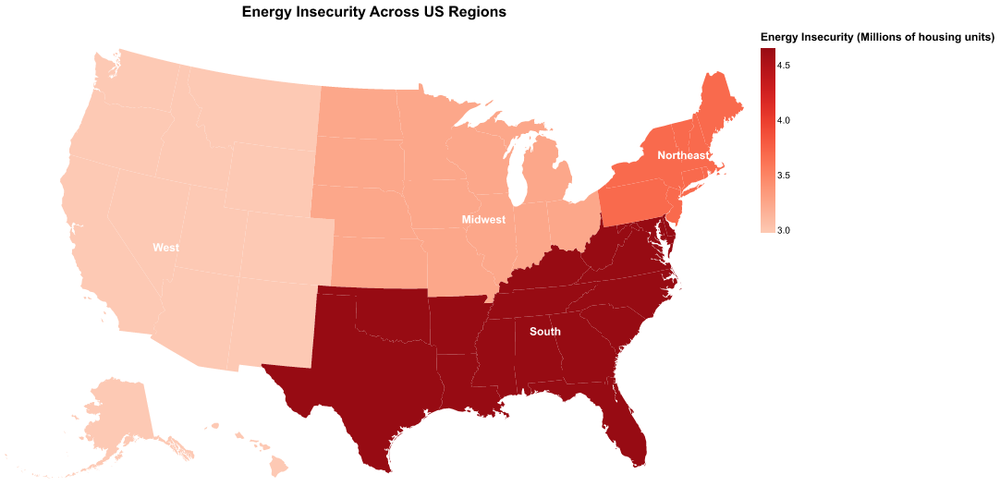
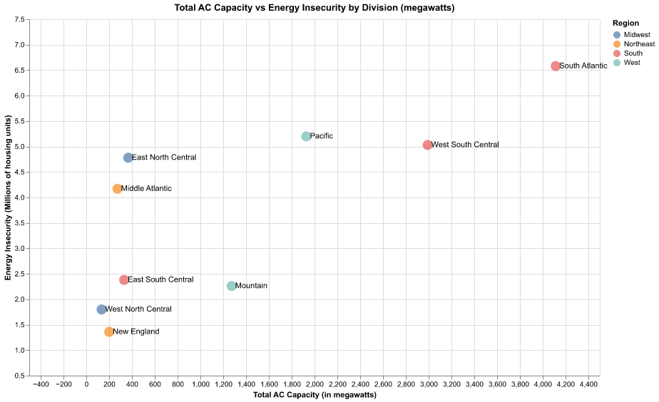
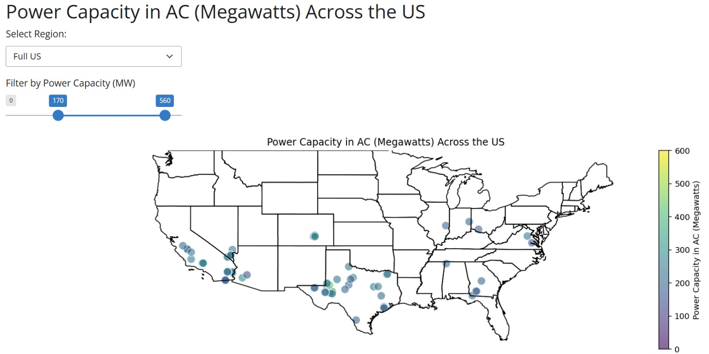

Final Project
Solar Infrastructure versus Energy Insecurity across US Regions
Introduction
As climate change becomes more of an existential threat, a greater number of households worldwide will be affected by extreme weather shocks, food shortages, and displacement. However, efforts to mitigate climate change by reducing greenhouse gas emissions and switching to renewable energy sources such as solar also present a series of challenges. As solar energy becomes more of an imperative within the United States energy ecosystem, it’s important to better understand how this may impact household energy insecurity. We are particularly interested in knowing if a greater volume of high-capacity solar facilities within a region is indicative of how secure nearby households feel about their access to energy.
In an ideal setting, more developed solar facilities may generate positive spillovers within their surrounding communities, facilitating access to solar while boosting perceptions of solar energy’s efficiency. However, we may also imagine a concerning scenario where investment in renewable energy infrastructure is funneling resources away from current energy accessibility, especially for low-income households. By visualizing the landscape of US solar infrastructure and analyzing how it correlates with nearby households’ energy insecurity, we hope to gain a better understanding of how, if at all, these two variables are connected.
Data and Methods
For our analysis, we worked with two key datasets. The first came from the US Energy Information Administration (EIA), a government agency operating with the express goal of surveying the public and collecting energy information for use in policy analysis alongside research and development. Their 2020 Residential Energy Consumption Survey (RECS) gathered data on housing characteristics such as fuel consumption per household, air conditioning usage, and most importantly, energy insecurity.
Broadly, energy insecurity refers to a household’s inability to meet basic energy needs. The EIA measured this value as an index linked to whether households had to forgo food or medicine to pay energy costs, had to leave home due to the temperature of the residence, or did not have access to heating or cooling equipment. Data was then grouped both demographically (age and ethnicity) and by region of the country. This allowed us to compile a comprehensive list of energy insecurity rates across the United States.
Our second dataset came from the United States Geological Survey, a government agency focused on surveying natural resources and energy facilities. We used their geographic database on Solar Photovoltaic facilities, which compiled all major US solar production facilities by year, along with their production capacity, location, and starting date. These facilities are in charge of supplying solar power to the grid, making them pivotal components of solar infrastructure development in the US. For our analysis, we focused on each facility’s production capacity, serving as a proxy for their level of development.
After carefully reviewing our datasets, we dropped missing values and aggregated the Solar PV data by region and regional subdivisions, mimicking the structure of the RECS data. We then restructured the RECS data to have a separate column denoting region and division, allowing us to merge the data on region and division. After this merge, each row in our dataframe represented one solar photovoltaic facility, along with both its region and division, and the relevant energy insecurity index of that given location.
Results

As we can see, energy insecurity appears to be far stronger in the South of the US. This may be due to weather conditions here such as greater humidity and increased susceptibility to heat waves. By contrast, the West has the lowest energy insecurity. The Northeast, the coldest region in the country, also displays an elevated level of energy insecurity. After having visualized the data, we moved on to producing a scatter plot that could help us answer our research question of interest: Is more solar power capacity a good indicator for how secure households near these plants felt about their energy? On the y-axis, we have the energy insecurity per millions of housing units within a particular region. On the x-axis is the cumulative AC capacity of all solar facilities within a given subregion:


We do not appear to observe any kind of strong correlation between these two variables, which we believe is an interesting finding in and of itself. We will discuss this further within the conclusion section. Lastly, our shiny app allows us to zoom in on solar infrastructure within any region of interest in the country. Our slider allows us to filter by solar capacity, meaning we can isolate particularly high or low-performing plants in a given area. There is also the option to view the full US map at once.
Discussion and Conclusion
By seeing no correlation, the data seems to suggest that solar facility capacity is not a good predictor of energy insecurity, and that the above hypotheses may not be playing out as anticipated. This may be the case because of how far away these facilities are from residential areas, or may even be a sign that higher local expenditure in solar energy facilities is uncorrelated with higher expenditure on average household energy consumption.
The data analysis is indicative that more research ought to be done into the factors that influence energy insecurity. With renewables as the future of energy, we need to ensure their development is not leaving households behind. If we can find a way to pair renewable energy development with greater energy security for households, this may reinforce the importance of these sources of energy within the current ecosystem. If we were to run this analysis again, it may be interesting to observe how weatherization assistance programs may affect energy insecurity, although publicly available quantitative data is limited.
We believe the greatest strength of our project lies in our map visualizations. These provide an easily accessible landscape for both energy insecurity and solar PV capacity, which could allow policymakers to more easily visualize which regions are most or least developed when it comes to renewable energy infrastructure.